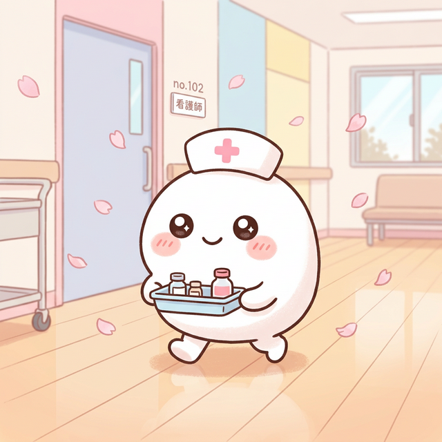
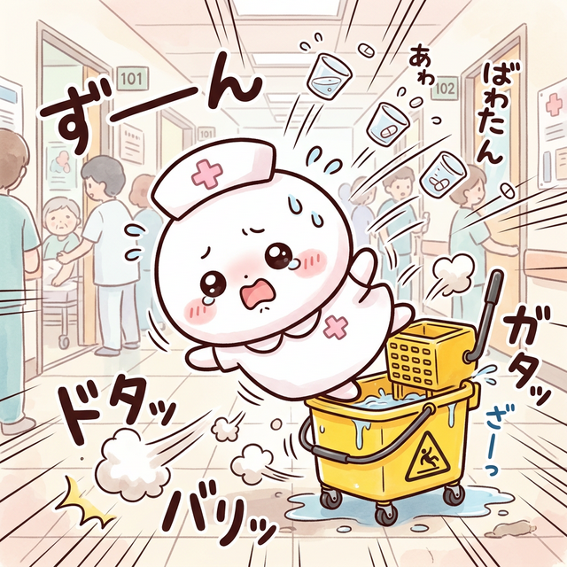
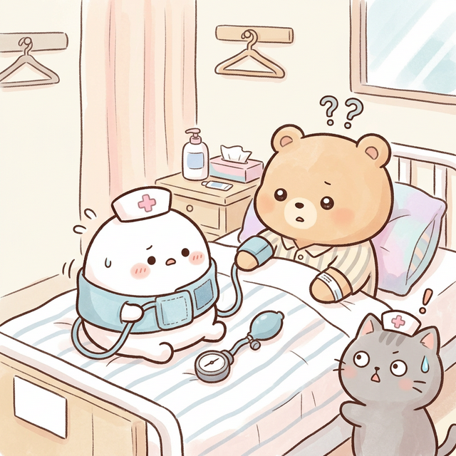

まるくてふわふわな新人ナース。
いつも一生懸命だけどドジばかり。
得意なこと：笑顔と謝罪
苦手なこと：それ以外ぜんぶ
| 報告日 | 2026年3月7日 |
| 報告者 | もちナース（研修3ヶ月目） |
| 発生場所 | 3階ひがし病棟 302号室 |
| 事故の種類 | ① おくすりトレイ転倒 ② 測定たいしょう誤認（じぶん） |
| 患者への影響 | なし（本人がいちばんダメージ） |
| 再発防止策 | 「はしらない」 「じぶんのうでと患者さんのうでを区別する」 |
| ねこ先生の コメント |
…がんばってください（3回目） |